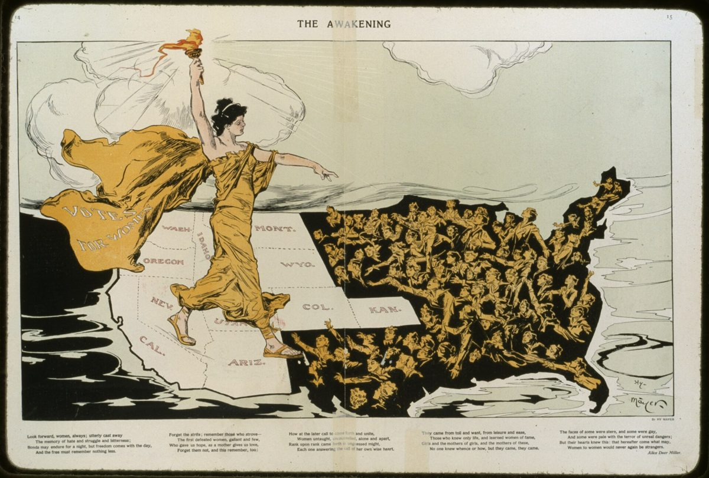
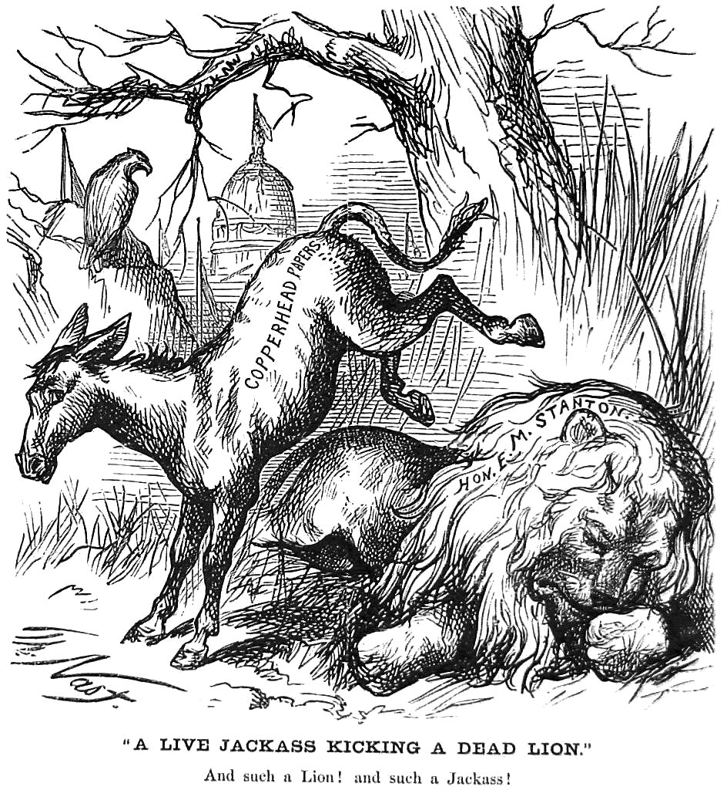
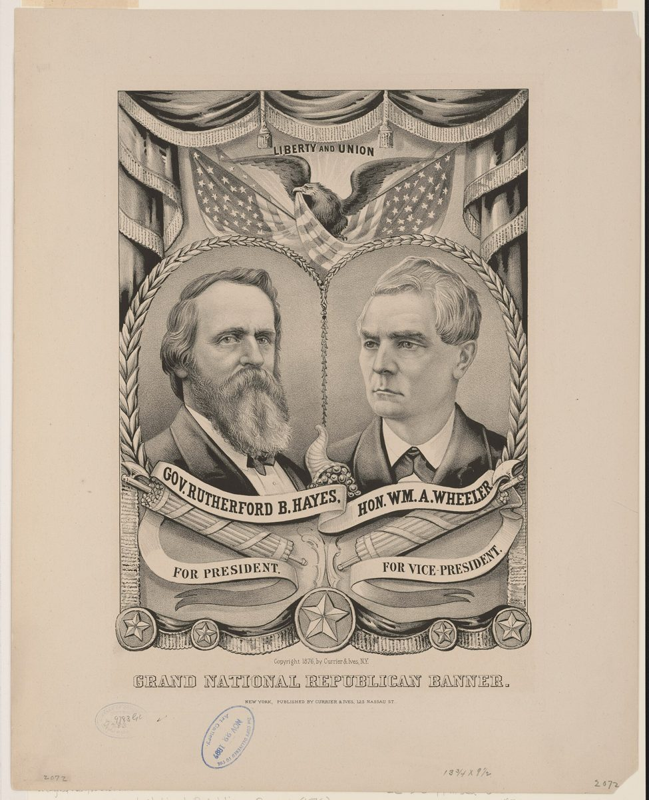
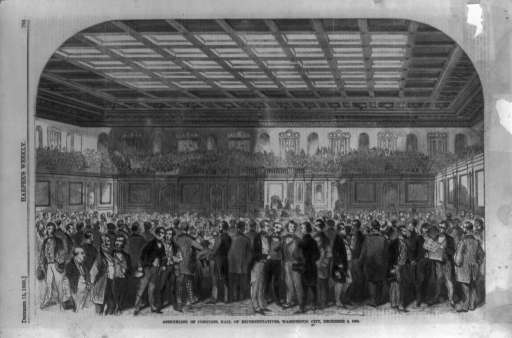

English · Bac pro · B1, with an entry level
Checked sources and image references
Sources (checked on 2 November 2026, House Historian on 4 November 2026)
- USAGov, Overview of the presidential election process
- USAGov, Presidential primaries and caucuses
- USAGov, Electoral College
- USAGov, Who can and cannot vote
- USAGov, Congressional elections and midterm elections
- USAGov, Branches of the U.S. government
- National Archives, About the Electoral College
- National Archives, 2024 Electoral College results
- National Archives, The Constitution, transcript
- National Archives, Amendments 11 to 27
- house.gov, The House explained
- Clerk of the House, Official list of members, 1 October 2026
- United States Senate, Senators
- NCSL, Tracking mid-decade redistricting
- PBS NewsHour, Ballot measures on Election Day 2026
- Al Jazeera, US midterms 2026 in maps and charts
- Massachusetts Historical Society, The Gerry-Mander
- House Historian, Party Divisions of the House of Representatives
Lesson 9: where students find the results (checked on 4 November 2026)
These pages give the results of 3 November 2026. They are listed for the students, who look up the figures themselves: no result is reproduced in this sequence.
- AP (Associated Press): 2026 election results: News agency. AP declares (calls) the winner of each race. Overview of the House, the Senate and the governors.
- AP: U.S. House results: The race in every district and the number of seats won by each party.
- AP: U.S. Senate results: The 35 Senate races of 2026 and the balance of power in the Senate.
- CNN: Election 2026 results: American news channel. Results, maps and the balance of power in the House and the Senate.
- Reuters: 2026 midterm elections: International news agency. News stories and links to its results graphics.
- BBC News: US midterm elections results 2026: British public broadcaster. Results tracker explained for readers outside the United States.
- NBC News: House results: American television network. Seats won by each party in the House.
- NBC News: Senate results: American television network. Seats won by each party in the Senate.
- CBS News: House results: American television network. Race by race results for the House.
- ABC News: House results, live map: American television network. A map of the results, state by state.
- The New York Times: House results: American daily newspaper. Detailed results; a subscription may be needed.
- Clerk of the House: Members: Official. The list of the members of the House, updated when the new members take office on 3 January 2027.
- house.gov: Representatives: Official website of the House. Find a representative by state.
- senate.gov: Senators: Official website of the Senate. The list of senators and their party.
- USAGov: State election offices: Official. The election office of each state publishes the certified (final) results.
Illustrations
All drawings, engravings and prints are in the public domain. Images reproduced from the Library of Congress, the National Gallery of Art, the Massachusetts Historical Society and Wikimedia Commons. Diagrams and charts: made for this sequence in HTML.
| Illustration | Full reference | Record |
|---|---|---|
 | Alfred R. Waud, The First Vote, 1867, wood engraving, cover of Harper's Weekly, 16 November 1867. Library of Congress, Prints and Photographs Division. Public domain. | open |
 | Henry (Hy) Mayer, The Awakening, 1915, colour offset print, centrefold of Puck, 20 February 1915. Library of Congress, Prints and Photographs Division. Public domain. | open |
 | Thomas Nast, A Live Jackass Kicking a Dead Lion, 1870, wood engraving, Harper's Weekly, 19 January 1870. Public domain, via Wikimedia Commons. | open |
 | Thomas Nast, The Third-Term Panic, 1874, wood engraving, Harper's Weekly, 7 November 1874. Library of Congress, Prints and Photographs Division. Public domain. | open |
 | Unknown artist, The Republicans in Nominating Convention in their Wigwam at Chicago, May 1860, wood engraving, Harper's Weekly, 19 May 1860. Library of Congress, Prints and Photographs Division. Public domain. | open |
 | Unknown artist, Grand National Republican Banner (Rutherford B. Hayes and William A. Wheeler), 1876, lithograph. Library of Congress, Prints and Photographs Division. Public domain. | open |
 | John Sartain after George Caleb Bingham, The County Election, 1854, hand-coloured etching, stipple, line engraving and mezzotint. National Gallery of Art, Washington. Public domain (CC0). | open |
 | Thomas Nast, A Truce, Not a Compromise, 1877, wood engraving, Harper's Weekly, 17 February 1877. Library of Congress, Prints and Photographs Division. Public domain. | open |
 | Unknown artist, Assembling of Congress, Hall of Representatives, Washington City, December 3, 1860, wood engraving, Harper's Weekly, 15 December 1860. Library of Congress, Prints and Photographs Division. Public domain. | open |
 | Joseph Keppler, The Bosses of the Senate, 1889, colour lithograph, Puck, 23 January 1889. Library of Congress, Prints and Photographs Division. Public domain. | open |
 | Attributed to Elkanah Tisdale, The Gerry-Mander. A New Species of Monster which Appeared in Essex South District in Jan. 1812, 1812, printed broadside. Massachusetts Historical Society, Boston. Public domain. | open |